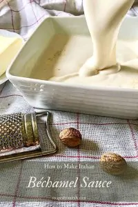

Besciamella

Description
Béchamel sauce (Besciamella) is a smooth, white sauce made with just 3 ingredients: flour, milk, and butter.
It's also known as White Sauce or Mother Sauce because many sauces are made with Béchamel as a base, such as Mornay Sauce,
which is a somewhat richer version.
Someone thinks that Béchamel recipe was born in France. In reality its origins are Italian. In fact it was born in Tuscany.
It was initially called “Salsa Colla” (“glue sauce”) because its main purpose was as a binding element in many pasta and vegetable dishes.
It was exported to France by Caterina de' Medici (see paragraph “Origins of Béchamel Sauce”)
Ingredients
- 500 ml (2 cups) of milk
- 50 g (1,7 ounce or ¼ cup) of unsalted butter
- 50 g (1,7 ounce or 4 tablespoons) of all-purpose flour
- 1/4 teaspoon of fine salt
- freshly grated nutmeg
- Parmigiano reggiano cheese (optional)
Steps
- Get ready with all the ingredients. Then in a saucepan, melt the butter over low heat. Now add the flour, better if you use a flour sieve,
in this way you are sure that no lumps are formed. Mix quickly (but very quickly) with a whisk. Stir until the mixture is smooth and without lumps.
This is the time when you have to be more careful. Cook for 30 sec/1 min so the flour becomes tastier and absorb the butter fats.
The mixture of butter and flour is called roux and it should be a nice golden color; you can even use it to thicken other sauces or gravy!
Now set aside and let it cool.
- Meanwhile heat the milk, without bringing to a boil. Pour the milk slowly over the roux,
while stirring vigorously with a whisk to prevent the formation of lumps.
When the milk is completely poured over the roux sauce, put the saucepan back on low heat. Keep mixing constantly,
until you have a fairly thick consistency (about 10/15 minutes). The sauce is ready when it sticks to the back of a wooden spoon.
- Add a pinch of fine salt and grated nutmeg to taste. For an even richer flavor, add a little Parmigiano reggiano cheese (optional).
Italian béchamel sauce is ready to use.